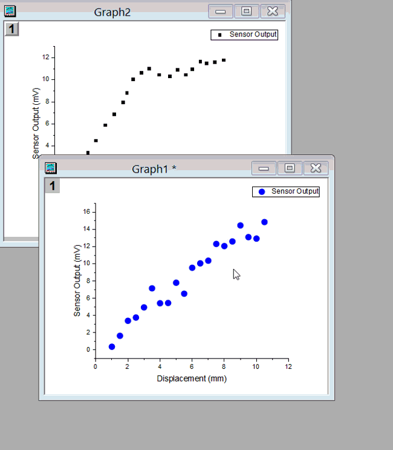
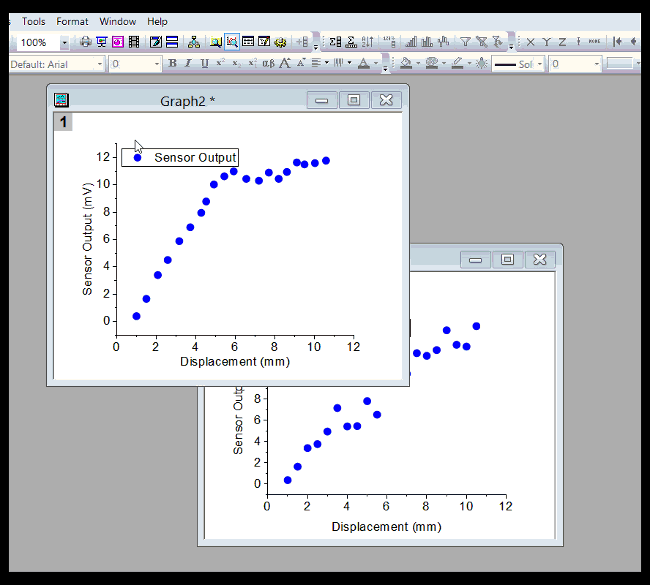

FAQ-164 あるグラフのプロパティを別のグラフにコピーする最も簡単な方法は?
Share-Graph-Theme
最終更新：2019/01/07
２つの手順：
- グラフ要素を右クリックして、コンテキストメニューからフォーマットのコピーを選択します。その後、別のグラフまたは同じグラフ内の他のレイヤにフォーマットを貼り付けます。複数のグラフに貼り付けるには、編集：フォーマットの貼り付け（詳細）...を選択することもできます。
- 
- グラフページにテーマを適用するテーマを使用すると、1つのグラフの機能をコピーしてプロジェクト内の一部またはすべてのグラフ、さらには将来のすべてのグラフに適用することができます（システムテーマの場合）。テーマを使用するには、F7キーを押すか、環境設定：テーマオーガナイザを選択してテーマオーガナイザダイアログを開き、グラフに適切なテーマを適用します。
- 
キーワード: テーマ,
フォーマット